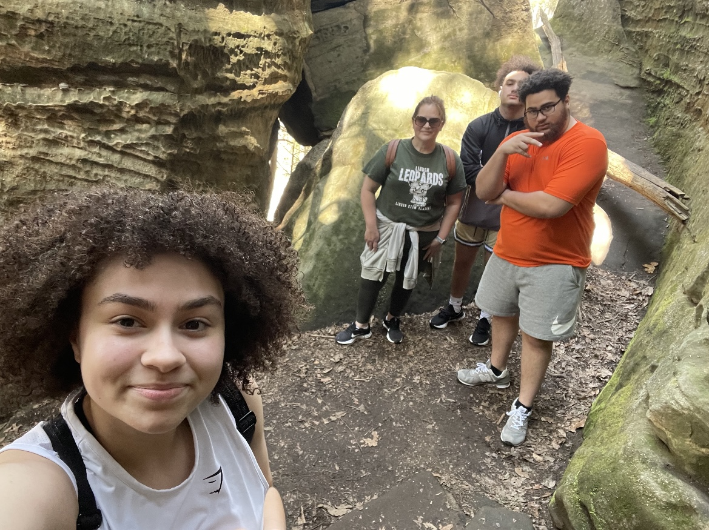

A wonderful mother, powerful leader, intuitive thinker, and genuine person.
Today and everyday, we celebrate and appreciate you!
"Happy Mother's Day ma dukes aka the Goat! I can't say enough how much I really appreciate all that you've done for me in so many situation ! No matter how rough a day is or how tough times get I need you to always remember that You've always been the type of parent that every kid needs and more ! Keep spreading your joy and laughter, it makes mine and everyon else you're around's life that much better." - Max
"Happy Mother's Day! Thank you for all the hugs, words of encouragement, and patience through the years. Knowing that I was raised by the best mom is such a privilege. I love you" - Rayna
"Momma, you've been an anchor in my life. You and I've seen many trials, some of which weren't our fault. In the midst of the confusion of my teenage years and the chaos of my early adult years, you've always been a safe space for me to fall down and get back up. They say it takes a village, and I'm fortunate that my village includes you. You've overcame a lot and served as an inspiration for me to keep going. I love you very much." -Tariq
